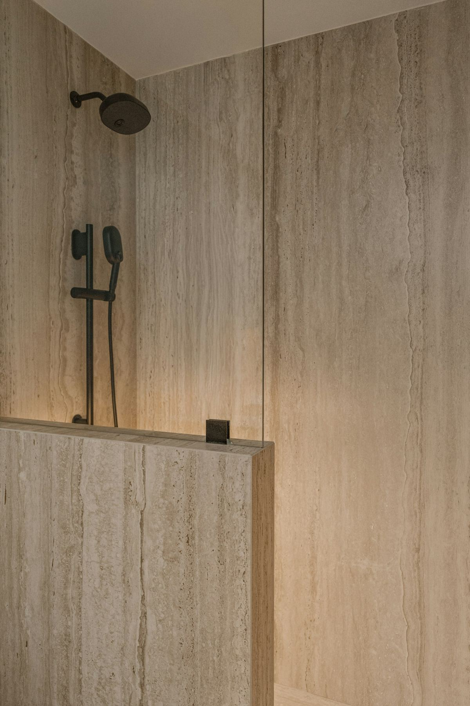
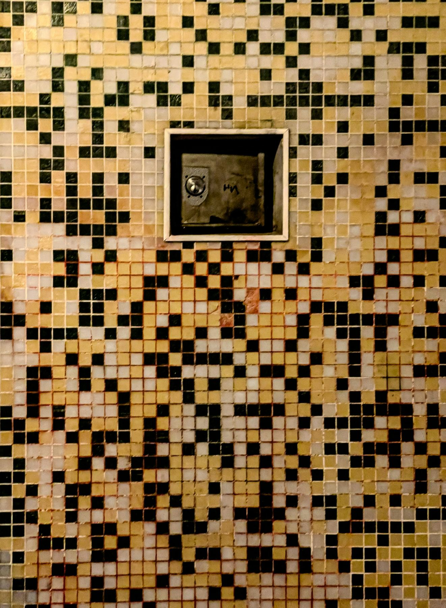
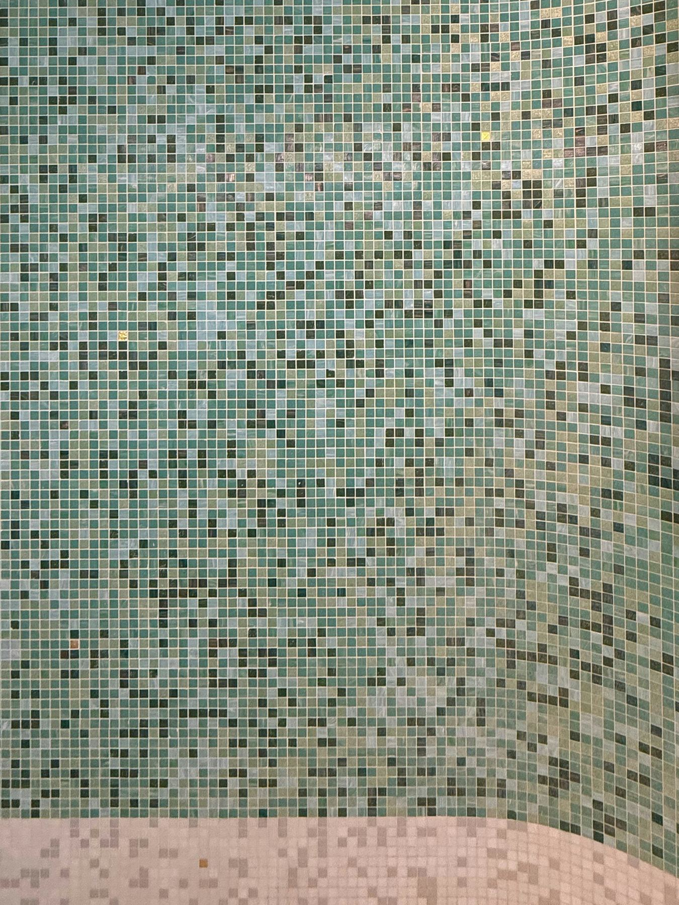
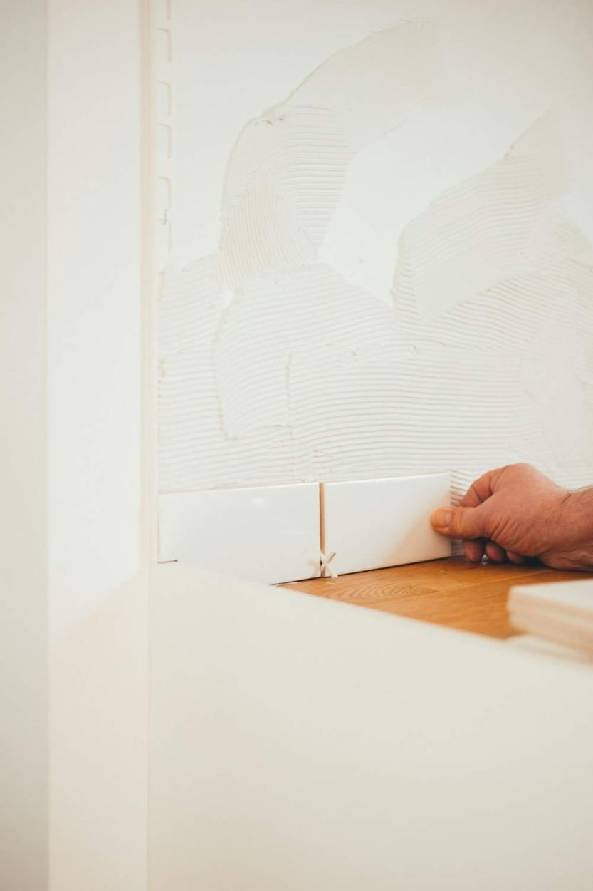

Savoir-faire
Sols, murs, salles de bains.
Carrelage, faïence, mosaïque, marbre et terre cuite : tout ce qui se pose, posé avec soin.
Photo d'illustrationCarrelage et dallage
Sols intérieurs, terrasses et allées : carrelage, dallage et pavé, posés de niveau et durables.
- Pose de carrelages et de dallages
- Revêtements de sols
- Pose de pavé
- Traitement du carrelage

Photo d'illustrationSalles de bains
Rénovation complète de salle de bains et de salle d'eau, jusqu'à la douche à l'italienne.
- Rénovation de salle de bains
- Douche à l'italienne
- Salle d'eau et WC
- Faïence murale

Photo d'illustrationFaïence et mosaïque
Murs, crédences, niches et habillages : la faïence et la mosaïque, posées au millimètre.
- Pose de faïence
- Mosaïque
- Revêtements de murs
- Niches et habillages

Les matériaux
Faïence, mosaïque, marbre, terre cuite.
Des matériaux choisis avec vous, selon la pièce et le style de la maison.
 Photo d'illustration
Photo d'illustrationMarbre et terre cuite
Des matériaux nobles, choisis avec vous, posés et traités pour durer.
- Pose de marbre
- Terre cuite
- Traitement du carrelage
- [Détails à compléter avec vous]

Photo d'illustrationCuisines
Sol, crédence et plan : la rénovation de votre cuisine, côté carrelage.
- Rénovation de cuisine
- Crédences en faïence
- Sols de cuisine
- [Détails à compléter avec vous]
 Photo d'illustration
Photo d'illustrationPlâtrerie et cloisons
Pour une rénovation complète : cloisons, plafonds, plâtrerie et petite maçonnerie.
- Plaquiste, cloisons
- Pose de plafonds
- Plâtrerie
- Petite maçonnerie
Questions fréquentes
Avant d'appeler
Fournissez-vous le carrelage ?
Oui, la fourniture et la pose sont possibles. Vous pouvez aussi choisir vos carreaux de votre côté.
Faites-vous les douches à l'italienne ?
Oui, de la dépose de l'ancienne douche à la pose du receveur, de l'étanchéité et du carrelage.
Pouvez-vous rénover toute la salle de bains ?
Oui : carrelage, faïence, mais aussi cloisons, plafonds et petite maçonnerie si besoin.
Où intervenez-vous ?
Depuis Tanneron, dans le Var et les Alpes-Maritimes : Pays de Fayence, pays de Grasse, Cannes, Mandelieu, Saint-Raphaël…

Zone d'intervention
De Tanneron à toute la Côte d'Azur.
Var et Alpes-Maritimes, depuis le massif du Tanneron.
TanneronMandelieu-la-NapoulePégomasAuribeau-sur-SiagneMontaurouxCallianFayenceSaint-CézaireGrasseMouginsCannesLe CannetSaint-RaphaëlFréjus